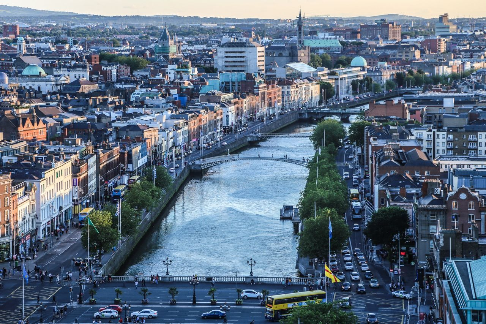
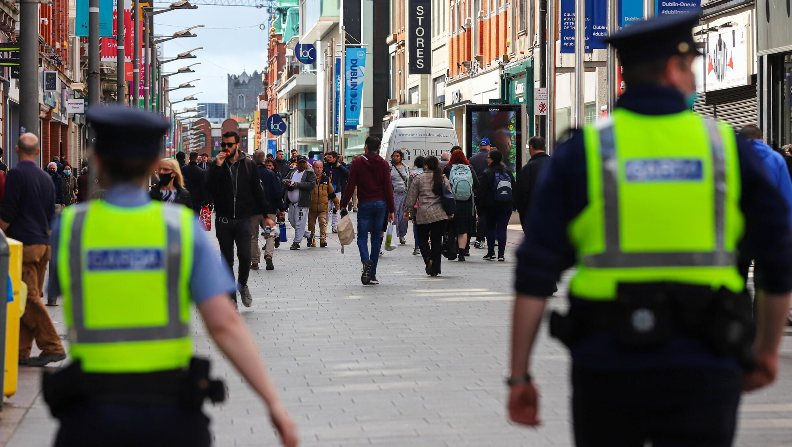

Public Safety & Policing Capacity in Dublin

A City Worth Protecting
Having lived in Dublin all my life, I have come to know it as a lively and diverse city. Rich in history, education, and business, Dublin has been, for as long as I've known it, a wellspring of culture and community. From the bustling streets around O'Connell and Grafton to the residential neighbourhoods where I grew up, the city is a place where people live, work, study, socialise, and thrive. Still, like any large city, Dublin faces its share of challenges in keeping public spaces safe and ensuring that people feel secure as they navigate their everyday lives.
What Is It, and Why Does It Matter?
One of the most pressing issues the city continues to face is regarding public safety and policing capacity. Public safety refers to protecting citizens from crime, violence, and other threats to their well-being, while policing capacity denotes the ability of An Garda Síochána to respond to criminal activity, as well as to take preventative measures and maintain a visible presence in the city.

I chose this topic as, in my own experiences and interactions with Dublin residents, I have become increasingly aware of the concerns some have shared regarding their safety in public spaces, noting a growing sense of fear and unease when discussing walking through certain areas, using public transport, or being out after dark. Alongside this newfound awareness, I felt a sense of indignation; I believe that everyone deserves the right to feel secure in their hometown without fearing for their safety. As such, I have been motivated to investigate whether public safety and policing capacity measures are meeting the needs of Dublin's residents.
The Goal
Through this website, I intend to explain the issues currently surrounding public safety and policing capacity in Dublin, investigate how these issues affect its residents, and explore practical solutions. I aim to foster critical, informed discussion regarding Dublin's responsibility to its residents to become a safer city through effective policing, prevention, and trust.
Contact Me
To get in touch about this project, reach out via email. Explore this issue further →